- 首頁
- 大二
- 大三
- 大四
- 英語相關
- 網路相關
- LAN Design
- Layer 2
- Layer 3
OSPF
OSPF 主要分為三個階段：
- 尋找鄰居：在兩台路由器上判斷是否需要交換拓樸資料
- 交換拓樸資料庫：路由器將資料存在 LSDB 上，LSDB 包含：
- Router 的資訊
- RID、Interface、IP、Netmask、Subnet
- 在每個 Interface 可以到達的 Router 清單
- Router 的資訊
- 路徑計算：由自己為出發點計算到其他 Router 的最短距離，選出每個子網路最好的 net-hop，將之加入 IP 路由表中
區域
每個 Router 上的 Interface 都屬於同一個 Area，而一些特殊的區域邊界路由器（Area Border Routers, ABR）則位在區域的界線上。
- 區域0稱為骨幹區域（backbone area），負責連接所有其他區域。
- 在兩個非骨幹區域之間通過的封包必須經過至少一台的骨幹路由器。
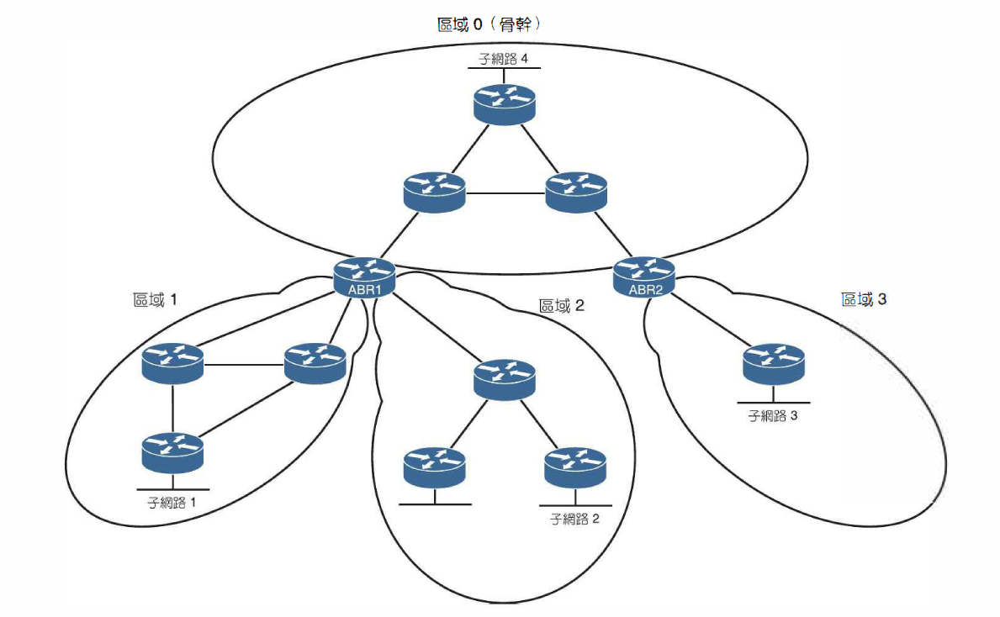
在同一個區域的 Router 互相交換詳細的拓樸資訊，不同區域則透過 ABR 做簡短的通知（子網路/遮罩），但不包含其他區域的拓樸細節。
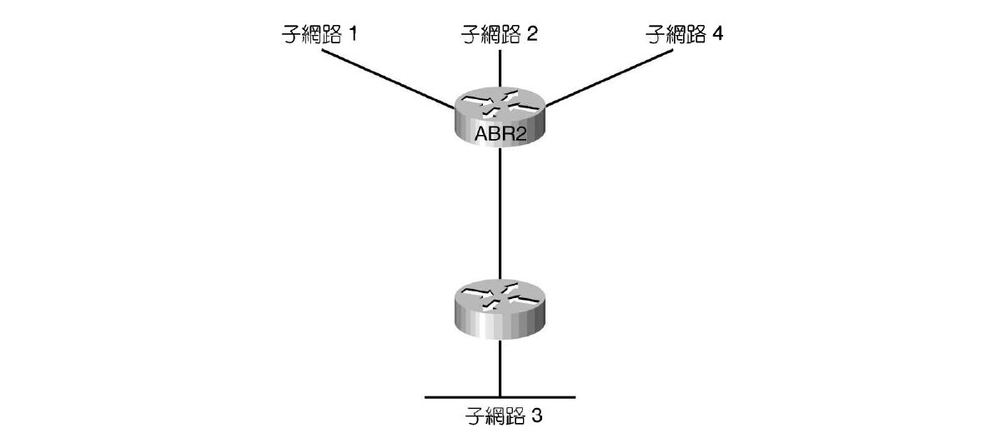
以拓樸來看，來自其他區域的子網路均視為直接連接到此 ABR。
OSPF術語名稱
SPF (Shortest Path First，最短路徑優先)
OSPF分析LSDB的演算法，以便決定最佳(最低成本)的路徑。
LSDB (Link-state database，鏈路狀態資料庫)
OSPF存放拓樸資料的資料結構。
LSU (Link-state Update，鏈路狀態更新)
OSPF封包的名稱。包含拓樸的詳細資訊，特別是LSA。
LSA (Link-state Advertisement，鏈路狀態通告)
具有拓樸資訊的OSPF資料結構。LSA存放在LSDB中，在網路上透過LSU訊息傳送。
ABR (Area Border Router，區域邊界路由器)
至少連接到兩個區域的路由器，ABR保存每個區域的拓樸資料、計算每個區域的路徑，並負責交換區域之間的路徑。
DR (Designated Router，委任路由器)
同一個網段中可能有多個 Router，假設每個 Router 需要建立 (n-1) 條連線，若 Fully Mesh 的連線總數為 n(n-1)/2
當 Router 越多連線數就越多，如此便多了很多不必要的通告。於是 OSPF 就在這些 Router 中選出一位 DR，所有 Router 只需與 DR 建立連線。
每次有 Routing Update，Router 只需把 Update 傳給 DR，再由 DR 統一發放給其他 Router，這樣，除了 DR 外， Area 裡每隻 Router 只需處理一條連線。
BDR (Backup Designated Router，備用委任路由器)
監控 DR，並在 DR 故障時接替它。
OSPF功能摘要
傳輸
IP Protocal 89 (不使用 UDP、TCP)
權值 (Metric)
路徑中所有出境介面的成本總和
Hello Interval
路由器送出 OSPF Hello 的時間間隔
Dead Interval
路由器如果沒有在時間內收到任何 OSPF 訊息，會中止鄰居關係
Update 封包之目的位址
通常會送給 224.0.0.5 (所有SPF路由器) 以及 224.0.0.6 (所有的DR)
完整或部份更新
當探索到新鄰居後，執行完整更新。其餘使用部分更新
驗證
MD5/plain-text
VLSM/無級式
每一條路徑包含遮罩，也允許 OSPF 支援不連續的網路和 VLSM
路徑標籤
當路徑重分配 (redistribute) 到 OSPF 時，允許 OSPF 為路徑加上標籤
Net-hop 欄位
若通告此筆路徑的路由器，與此路徑所指向的 Net-hop 不同時，就會用到此欄位
手動路徑彙整 (route summarization)
只允許在 ABR 上做路徑彙整
在 LAN 上的 OSPF
OSPF 在所有鄰居參數的核對都通過後，就會存在兩種鄰居關係：鄰居(neighbor)和完全相鄰(fully adjacent)關係。最後，OSPF 會使用具有 8 個狀態的 FSM，用於描述每一個 OSPF 鄰居目前的狀態。
啟用鄰居探索
- 透過
network或ip ospf area啟用 Interface 上的鄰居探索 - Interface 尚未透過
passive-interface設定為被動模式
當滿足以上條件，OSPF 就會傳送 Hello 到 224.0.0.5 (OSPF的群播位置)，接著檢查 Hello 本身的 RID，以及路由器分配給 LAN 的 OSPF Area。
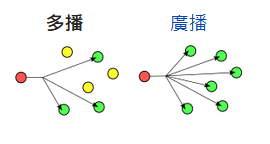
建立鄰居關係所必須相符的設定
當收到其他路由器的 Hello，OSPF 就會發現準鄰居，接著就會開始比對資料，判斷是否可以成為鄰居。以下為參考資料：
- OSPF RID
- 末梢（Stub）區域標籤
- Hello interval
- Dead interval
- Subnet mask
- Interface 可到達的鄰居清單
- Area ID
- Router 的 Priority
- DR 的 IP
- BDR 的 IP
- 驗證摘要
OSPF RID 的唯一性
每個 OSPF 路由器都會為自己分配一個 RID，尋找順序如下：
- 首先尋找
router-id <rid> - 尋找狀態為 up 的 loopback 最大的 IP
- 尋找 up 的 interface 最大的 IP
若 OSPF RID 不遵守唯一性，學習網段時會與與形成鄰居的順序有關，如此會造成不可預期的結果。
相同 OSPF RID 的兩台路由器無法形成鄰居關係。
使用相同的 IP MTU
介面的 MTU 是設定從 Interface 轉送出去的封包的最大尺寸。當路由器轉送的封包超過 MTU 時，路由器會對封包進行分段，如果 IP header 中的 DF (Don’t Fragment) 有設定，則會進行丟棄。
當兩個 OSPF 鄰居之間的 MTU 值不同時，其中一台路由器會試圖和其他 MTU 不同的路由器成為鄰居。
雖然路由器會出現在鄰居清單中 (透過 show ip ospf neighbor 列出的清單)，但這兩台路由器間不會交換拓樸資訊。且這兩台路由器計算路徑時，並不會將對方視為 Net-hop。
拓樸資料的交換永遠不會成功，鄰居狀態：EXSTART > DOWN > 其中一台 Router 會再度嘗試 > INIT
形成鄰居的必要條件
- Interface 的 primary IP 必須屬於相同的子網路
- 直連介面不可以是 passive
- 相同的 Area
- Hello interval 或 Dead interval 相符
- RID 唯一
- IP MTU 相符
- 必須通過鄰居的驗證（如果有設定的話）
在 WAN 上的 OSPF
須滿足在 LAN 形成鄰居的必要條件，此外在不同類型的 WAN 鏈路上仍須考量其他因素：
與 OSPF 網路類型相關:
- 路由器是否使用 OSPF Hello 群播訊息來探索彼此，或者需要預先定義鄰居?
- 路由器會試著選出 DR 嗎？如果是的話，什麼樣的路由器有資格成為 DR?
視 WAN 服務而定:
- 每個路由器會和其他哪些路由器成為 OSPF 鄰居?
OSPF 網路類型
網路類型 (依介面設定) 主導了 OSPF 的運行方式：
- 路由器是否能使用 Hello 探索鄰居
- 在連接的 Subnet 中是否存在兩台以上的 OSPF 路由器
- 在某介面中是否應該選出 OSPF DR
舉例來說，點對點鏈路和點對點 WAN 子介面預設使用的網路類型是「點對點」，代表除了該子網路裡只能存在二部OSPF路由器，以及透過 Hello 動態地探索到鄰居之外，這二台路由器並不會選出 DR。
| 介面類型 | 使用 DR/BDR | 預設的 Hello Interval | 鄰居的動態探索 | 相同子網路支援多台路由器 |
|---|---|---|---|---|
| 廣播 | 是 | 10 | 是 | 是 |
| 點對點 | 否 | 10 | 是 | 否 |
| Loopback | 否 | - | - | 否 |
| 非廣播 (NBMA) | 是 | 30 | 否 | 是 |
| 點對多點 | 否 | 30 | 是 | 是 |
| 點對多點非廣播 | 否 | 30 | 否 | 是 |
點對點(P2P)
- 這條 link 兩端只有 2 個 point，互為 neighbor
- 在其中一端送，只會有另一端收
廣播(broadcast)
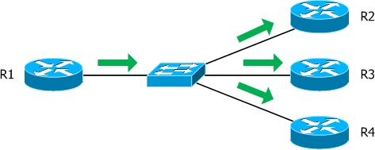
- default network type
- 透過 broadcast 的方式傳送 OSPF packet
- 高擴展性，加入新 router 時，只需要設定新 router 即可
- 選 DR 和 BDR，防止更新路徑時傳送過多的 packet
非廣播(Non Broadcast)
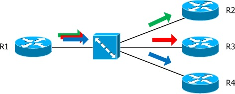
- 處理網路 protocol 不支援 broadcast，EX : frame-relay, ATM (PVCs)
- 在交流之前，需要先知道對方是誰
- 要傳給 n 個 neighbor，需要 ruplicate n 次
又分為:
- Point to Broadcast
- 不模擬 broadcast 的方式，而是把多個 point-to-point 的組成 PVCs(Permenent Virtual Circuit)
- 需要 ruplicate OSPF packet 傳送給多個 neighbor
- 不選 DR/BDR
- 這些 point-to-point link 可以使用同一個子網路
- Non-Broadcast Multi-Access (NBMA)
- 需要設定每個 neighbor 的 IP
- 用 unicast 模擬 broadcast 的方式
- 有選 DR/BDR
鄰居關係
訊框中繼點對點連線
將一對 VPC 兩端的路由器視為點對點拓樸，並分配一個子網路給每一對的路由器。
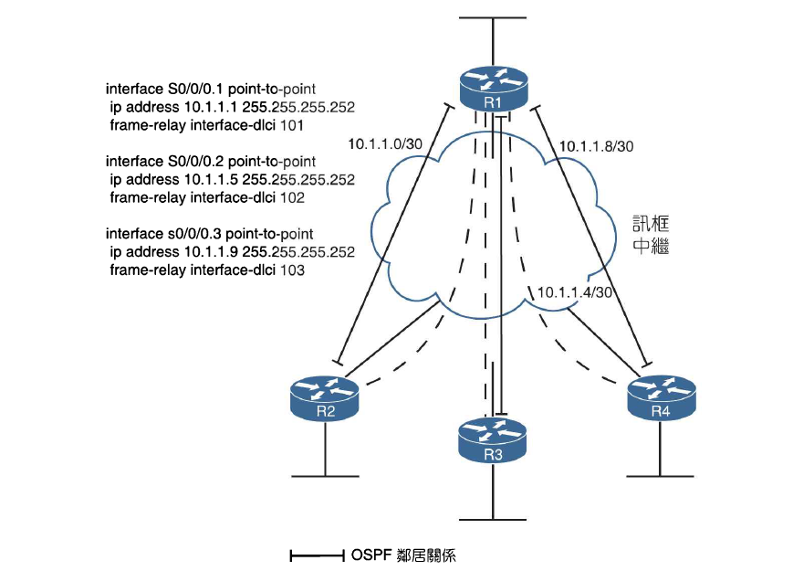
MLPS VPN
多重協定標籤交換技術 (Multiprotocol Label Switching，MLPS)
使用 Layer 3 傳遞，所以客戶端的路由器不用事先定義 PVC。
在服務供應商的網路邊界上，有 Layer 3-aware 的 PE (Provider edge)。與另一端 Layer 3-aware 的 CE (Customer edge) 相連，形成 OSPF 鄰居。
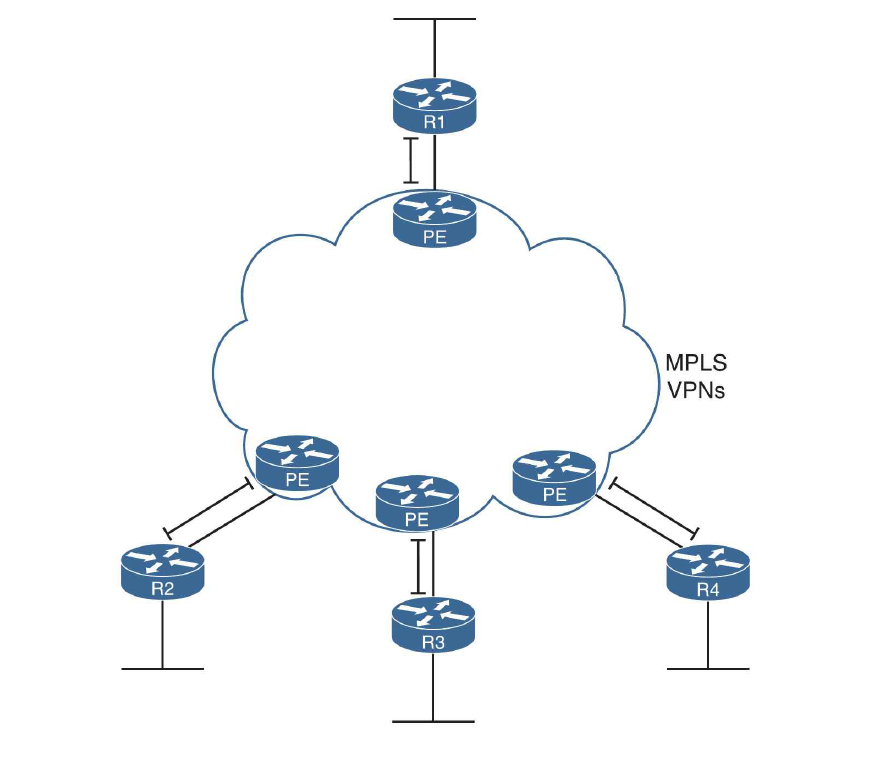
都會型乙太網路
因為都會型乙太網路提供 Layer 2 的連線，所以客戶的路由器不會和服務供應商網路內的路由器形成 OSPF 鄰居，而是在客戶端間產生，使得該服務就像是大型的 WAN。
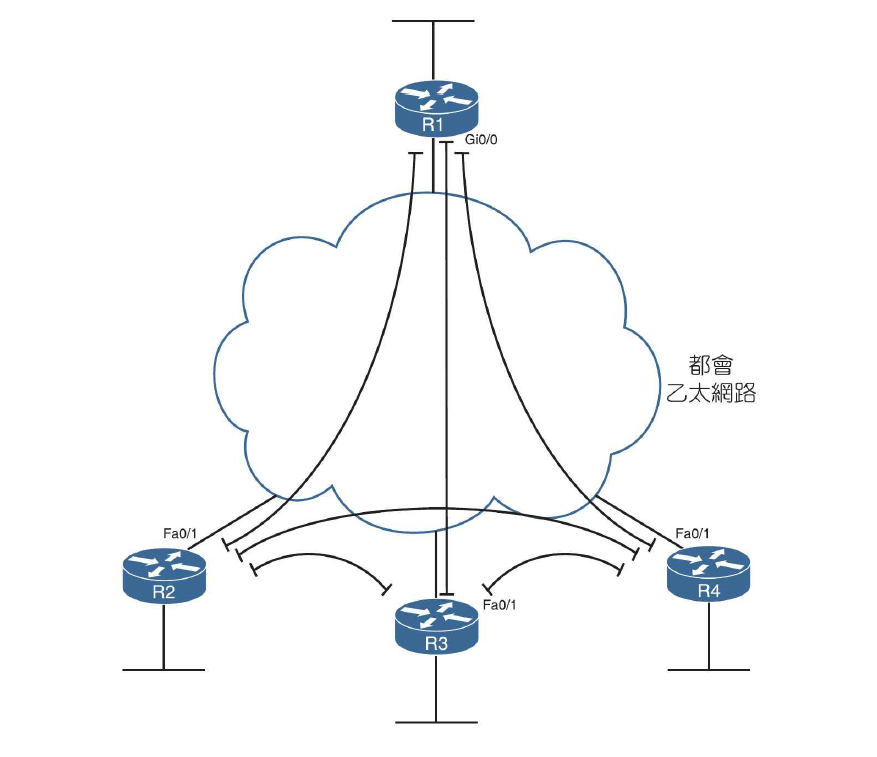
OSPF 虛擬鏈路
在某些情況可能存在兩個骨幹區域，換句話說，有時非骨幹區域可能不方便直接連接到骨幹區域，舉例來說：
- 現有網路需要加入新的區域，但新的區域沒有直接連接到Area 0
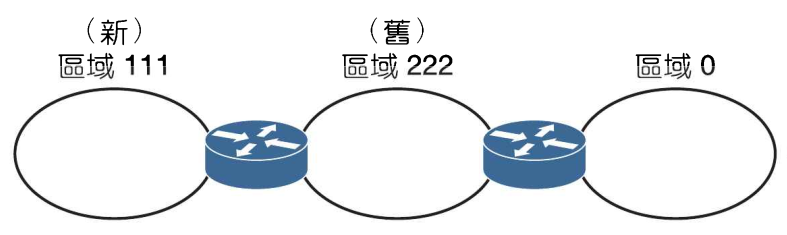
- Area 0 中的鏈路斷路，形成一分為二的拓樸
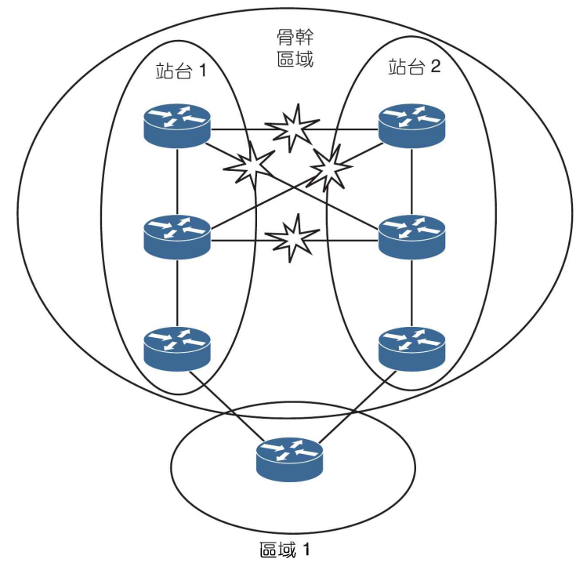
概念
OSPF 虛擬鏈路支援兩台連接到相同非骨幹區域的 ABR，即使被許多其他路由器與子網路隔開，也能經由非骨幹區域建立鄰居關係。好比兩台路由器間位在 Area 0 的虛擬的點對點連線。
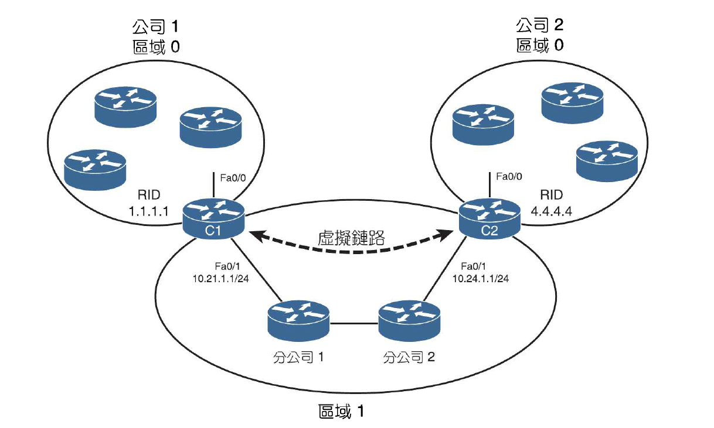
- 若要設定虛擬鏈路，兩台路由器都要設定對方的 RID，並參考到虛擬鏈路所通過的 Area
- 兩台路由器傳送一般的 OSPF 訊息類型，封裝在單點傳送 IP 封包，目的地為虛擬鏈路另一端的 IP 位址
虛擬鏈路兩端的 ABR 與其他普通的 ABR 運作大抵相同，除了：
- 以單點傳送將所有的 OSPF 訊息傳送到鏈路另一端
- 會在 LSA 上標示 DNA（Do Not Age，沒有期限），代表虛擬鏈路另一端的路由器，不必在平常 30 分鐘重整間隔期間重新洪泛 LSA 到虛擬鏈路上。
- 路由器可以替虛擬鏈路指定 OSPF 成本
設定
使用 area virtual-link 命令加上參數
注意:
- 兩台路由器連接的中繼區域不可以是末梢(stubby)區域
- OSPF 鄰居驗證參數 (optional)
- Hello interval, Dead interval (optional)
- OSPF 成本
檢驗
show ip ospf virtual-links
show ip ospf neighbor
LSA
| LSA 類型 | 一般名稱 | 描述 |
|---|---|---|
| 1 | Router | 每個路由器都會建立自己的第 1 型 LSA, 用來描述本身連接到的每個區域。 |
| 2 | Network | 每個傳輸網路會有一個第 2 型 LSA。 |
| 3 | Net Summary | 由 ABR 建立並通告到其他區域，描述一個區域的第 1、2 型 LSA 所列的子網路。 |
| 4 | ASBR Summary | 類似於第 3 型 LSA, 但會通告一條用來到達 ASBR 的主機路徑。 |
| 5 | AS External | 由 ASBR 建立，負責將外部路徑傳到 OSPF 裡。 |
| 6 | Group Membership | 針對MOSPF而定義，Cisco IOS並不支援。 |
| 7 | NSSA External | 由NSSA區域內的ASBR所建立，以代替第5型LSA。 |
| 8 | Link LSA | 只存在於本地鏈路的第 8 型 LSA· 路由器用來通告其鏈路區域位址給相同鏈路上的其他路由器。 |
| 9 | Intra-Area Prefix LSA | 用來傳送關於連接路由器的1Pv6網路（包括末梢網路）， 類似1Pv4網路的第1型LSA。 |
| 10-11 | Opaque | 作為一般用途的LSA, 方便OSPF日後的擴充。 |
內部 LSA
OSPF 使用第 1、2、3 型 LSA 來計算 OSPF 領域內所有路由的最佳路徑。在後面會介紹使用 4、5、7 型 LSA 來計算外部路徑 (將路徑重新分配到 OSPF)。
第 1 型
又稱為 Router LSA，根據 OSPF RID 來識別 OSPF 路由器。每個路由器本身會建立第 1 型LSA。並將此 LSA 洪泛到相同的整個區域。
OSPF 使用 32-bits 的 LSID (link-state identifier) 來辨識第一型 LSA，建立 LSID 時，會使用自己的 RID 當作 LSID。
- 區域內部的每個路由器本身會建立一個第 1 型 LSA。
- ABR 會建立多個第 1 型 LSA：每個區域一個。
傳送資訊:
- 對於每個沒有選出 DR 的介面，第 1 型 LSA 列有該路由器的 interface network id / netmask 與 interface 的 OSPF 成本。OSPF將這些子網路稱之為末梢綱路。
- 對於每個選出 DR 的介面，則列舉 DR 的 IP 位址與連接至傳輸網路的標記 (意指該網路存在第2型LSA)。
- 對於每個無 DR 的介面，若可以到達鄰居，則會列舉該鄰居的 RID。
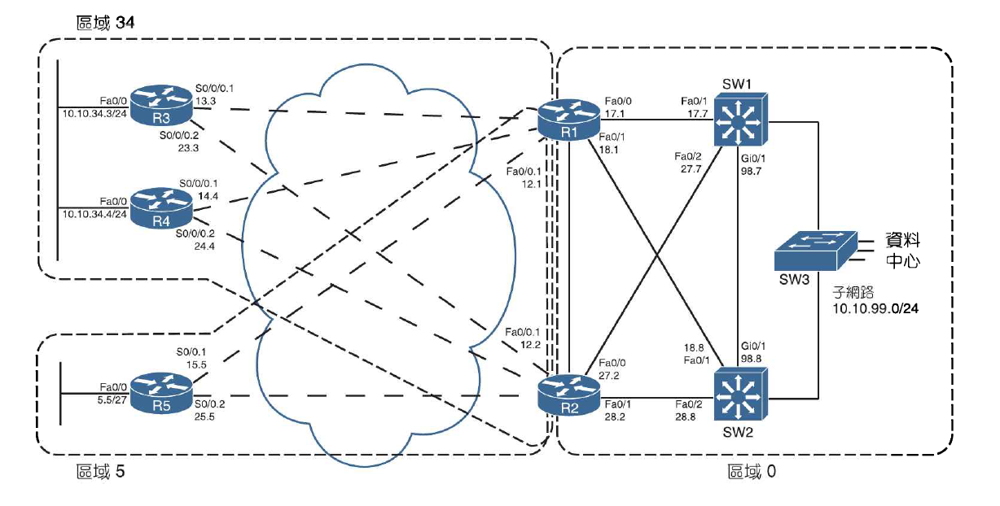
以區域 5 為例，有一台內部路由器 R5，以及兩台 ABR R1、R2，這三台路由器各自建立第 1 型 LSA 並 flood 到區域 5 中，且都知道這 3 個相同的第 1 型 LSA。
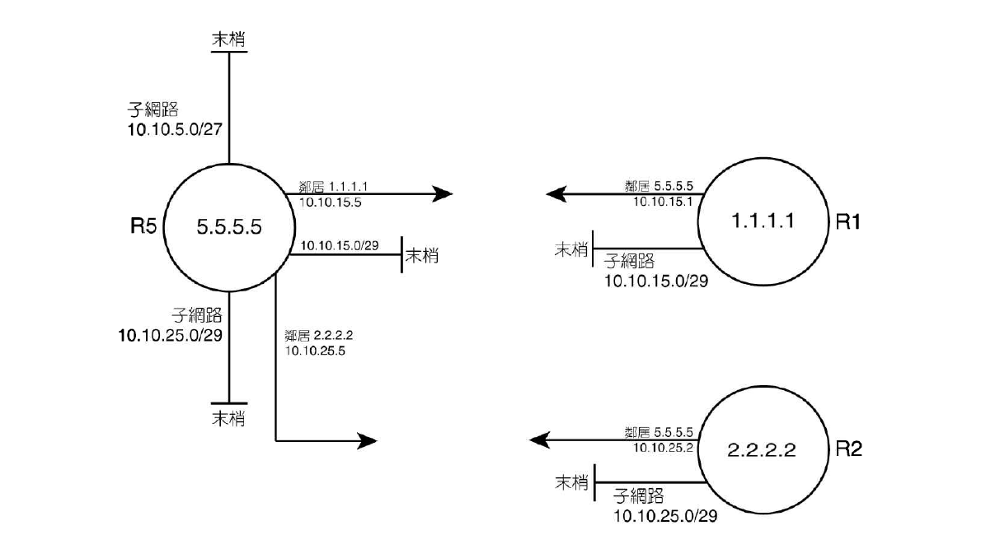
R5 的第 1 型 LSA 資訊:
- LSID 5.5.5.5
- 連結到末梢網路的三條鏈路，每條都包含子網路/遮罩
- 兩條鏈路連到鄰居 R1、R2
第 2 型
又稱為 Network LSA，SPF 要求 LSDB 建構出來的拓樸必須具備節點 (路由器) 以及節點之間的連接 (鏈路)。OSPF必須以某種方式建構出區域網路，使得拓樸能夠呈現節點與鏈路。為了滿足需求，OSPF 使用了第 2 型 Network LSA 來解決問題。
實際上 ，OSPF 是根據介面上是否選出 DR，來選擇多重存取網路是否使用第 2 型 LSA。
DR
使用DR的主要目的：
- 建立第 2 型 Network LSA 並 flood 到該子網路。
- 協助子網路上資料庫交換
當 DR 和 BDR 都還不存在的時候，路由器使用以下規則：
- 選擇具有最高優先權（
ip ospf priority value，default 1，max 255) 的路由器 - 若優先權相同，則選擇 RID 最高的路由器
- 根據次佳的優先權來選擇 BDR。如果優先權相同，則選擇次佳的 RID
當 DR 和 BDR 都存在的情況：
- DR 斷線，BDR 成為 DR，選新 BDR
- BDR 斷線，直接選 BDR
概念
為了滿足「一條鏈路只能連到兩個節點」，OSPF 使用第 2 型 LSA 來建構多重存取網路 (超過2部以上的路由器連到相同子網路)
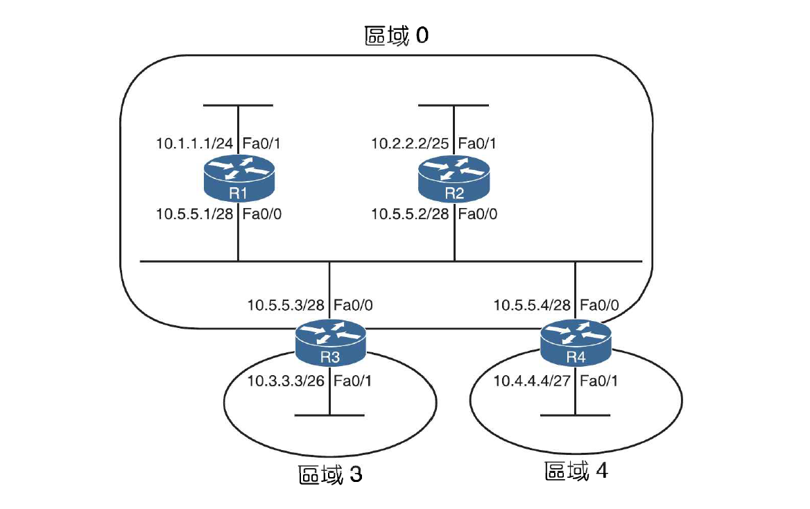
以上圖為例，由於 OSPF 無法讓 4 台路由器只透過一條鏈路連接到同一個子網路，因此 OSPF 定義了第 2 型 Network LSA 來做為虛擬節點 (pseudonode)。每個路由器的第 1 型 Router LSA 會列出至此虛擬節點的連結，再利用第 2 型 Network LSA 來建立它。
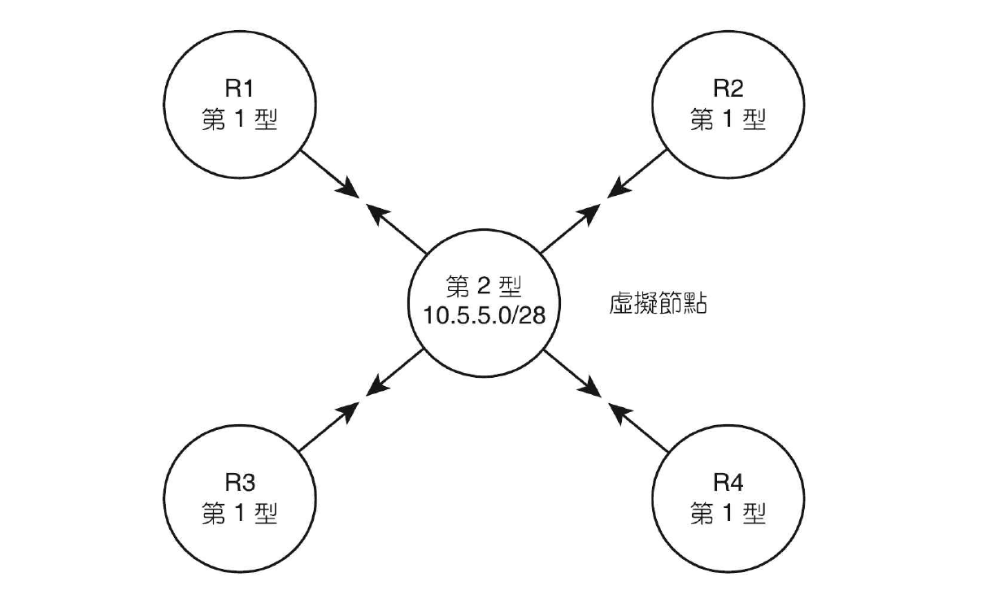
例子
以區域 34 為例，R3、R4 連到相同的區域網路，代表會選出 DR (當至少有 2 台路由器滿足建立鄰居的必要條件時，就會成為鄰居，接著 OSPF 會在 LAN 上選出 DR)，若 R3、R4 優先權相同，則 R4 成為 DR。所以，R4 在該子網路中建立了第 2 型 LSA 並 flood，如下圖所示：
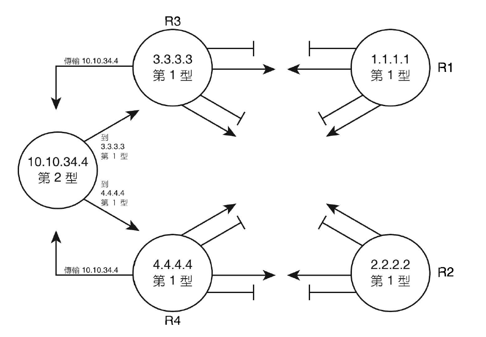
由此可知，OSPF 利用第 1 型、第 2 型 LSA 來建構出單一區域內所有的拓樸。一旦路由器使用 SPF 程序建立拓樸模型後，接下來就可以計算該區域裡每個子網路的「最佳路徑」。
第 3 型
又稱為 Summary LSA，為了不讓所有路由器都知道 OSPF 領域中全部的第 1、2 型 LSA，ABR 並不會從某個區域將第 1、2 型 LSA 轉送到另一個區域中，反之亦然。如此可以縮小 LSDB，進而節省記憶體與縮短收斂時間等。
ABR 不將第 1、2 型 LSA 轉送到另一個區域中，而是用第 3 型 LSA (Summary LSA) 來通告這些區域的路徑。ABR 會替一個區域裡的每個子網路產生一個第 3 型 LSA，再把每個第 3 型 LSA 通告到其他區域裡。第3型 LSA (Summary LSA) 不包含所有拓樸的詳細資訊，僅負責彙整網段的資訊。
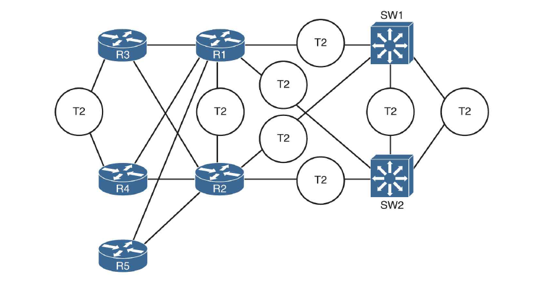
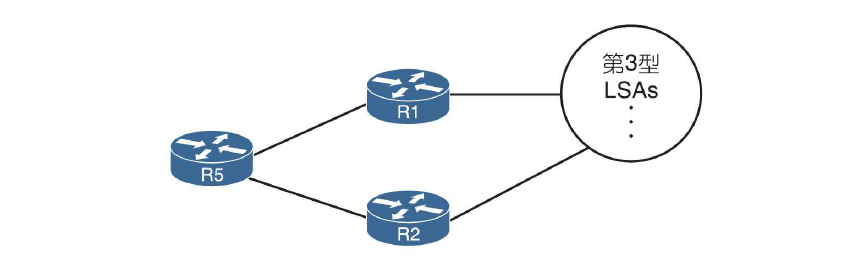
ABR 負責建立第 3 型 LSA 並 flood 到下一個區域裡。ABR 會替通告的子網段位址冠上 LSID，並將自己的 RID 新增到 LSA。(這樣路由器才知道是哪個 ABR 通告了該路徑)
使用第 3 型 LSA 之目的並非為了彙整路徑。這裡的 “Summary” 只是相較第 1、2 型 LSA 的詳細資訊表示較精簡的意思。
限制 LSA 數量
max-lsa number，避免記憶體不足，假設超過 LSA 上限：
- log
- 忽略與等待所有鄰居關係中止
- 刪除 LSDB
- 重新新增鄰居
摘要
| 類型 | 名稱 | 意義 | LSID | 建立者 |
|---|---|---|---|---|
| 1 | Router | 一台路由器 | 路由器的 RID | 每台路由器都會自行產生 |
| 2 | Network | 存在 DR 的子網路 | 改子網路中 DR 的 IP | 子網路裡的 DR |
| 3 | Summary | 另一個區域內的子網路 | 子網路編號 | ABR |
資料庫交換程序
當拓樸交換完畢後，對區域內的路由器而言，該區域的 LSDB 理應一致。內部路由器只會有該區域的 LSA，ABR 則會包含所有連接區域的 LSA。OSPF 路由器洪泛它們所建立的 LSA，並從它們的鄰居學到新的 LSA，直到同區域所有路由器都擁有最新的 LSA 副本為止。
OSPF訊息類型
| 訊息名稱/編號 | 描述 |
|---|---|
| Hello | 用於探索鄰居、建立雙向鄰居關係與監控鄰居回應 |
| 資料庫描述 (DD/DBD) | 用於交換每個簡要的 LSA 一般用在初始的拓樸交換 |
| 鏈路狀態要求 (LSR) | 列舉 LSA 的 LSID 的一種封包 |
| 鏈路狀態更新 (LSU) | 包含完整 LSA 詳細資訊的一種封包，用以回應 LSR 訊息 |
| 鏈路狀態確認 (LSAck) | 用來確認收到LSU訊息所傳送的封包 |
OSPF鄰厝狀態
| 狀態 | 意義 |
|---|---|
| Down | 超過 Dead Interval 後仍沒有收到來自此鄰居的 Hello |
| Attempt | 利用 neighbor 命令定義鄰居時，在傳送 Hello 後並收到鄰居的 Hello 前的這段時閒所使用的狀態 |
| Init | 鄰居已收到本地路由器的 Hello 封包，但 Hello 參數不符時所使用的一種永久狀態 |
| 2-Way | 鄰居已收到 Hello，Hello 包含了路由器的 RID，並通過所有鄰居的檢驗 |
| ExStart | 目前協商用於 DD 封包的 DD 序號與主從關係 |
| Exchange | 完成 DD 程序詳細資訊的協商，且目前正在交換 DD 封包 |
| Loading | 所有的 DD 封包交換完畢，且路由器目前正在傳送 LSR、LSU 及 LSAck 來交換完整的LSA |
| Full | 與鄰居形成了完全相鄰關係，意指它們該區域的 LSDB 完全相同，並開始計算路由表 |
無DR情況下的交換
每個 OSPF 鄰居關係的建立是由交換 Hello 開始，直到鄰居 (有希望) 達到 2-Way 狀態為止。在路由器收到 Hello 並確認所有必要的參數均相符之後，路由器會在 Hello 裡列舉已見過的另一台路由器之 RID。
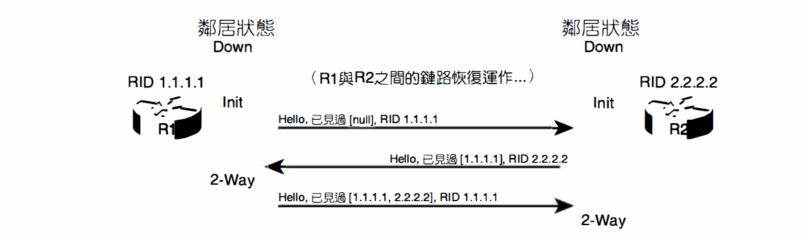
當路由器與鄰居都達到 2-Way 狀態時，路由器要來決定是否交換它的 LSDB。在沒有 DR 存在的情況下一定會回答「yes」，程序如下：
- 探索鄰居已經知道但自己尚未知道的 LSA
- 探索路由器雙方已經知道的 LSA，但鄰居的 LSA 是比較新的
- 向鄰居要求所有步驟1與步驟2所識別的 LSA 之副本
在路由器進入2-Way 並決定與鄰居交換 LDSB 後，會進行以下步驟：
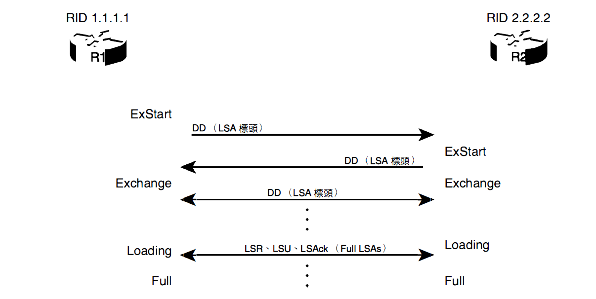
探索鄰居LSDB的內容
每個鄰居的主要目標是要瞭解區域內的哪個 LSA 還不知道，因此會要求路由器雙方要將所有已知該區域內的 LSA 之 LSID 告訴彼此。為了學到鄰居已知的 LSA 清單，鄰居路由器會遵循以下的步驟：
- 將資料庫描述封包(DD/DBD)傳送到 SPF 路由器的 224.0.0.5 群播位址
- 當傳送第1個 DD 訊息時，就會進入「ExStart」狀態，直到其中一台 RID 較高的路由器成為 master 為止
- 在選出 master 之後 ，鄰居開始進入「Exchange」狀態
- 彼此繼續送出 DD 群播訊息給對方，直到路由器雙方已知兩者所收集的該區域之 LSID 都一樣為止
DD 訊息本身僅有 LSA 標頭，不包含整個 LSA。這些標頭包含了 LSA 的 LSID 和序號。
最初建立的 LSA 之 LS序號是從 0x80000001 開始；每當 LSA 變更時，建立 LSA 的路由器就會增加序號，然後重新洪泛此 LSA。
對於每次的交換，master 會利用 slave 回應給 master 的 DD 訊息，來控制 DD 訊息的流向。master 會持續送出 DD 訊息，直到列舉該區域裡所有已經知道的 LSID 為止。
直到每一台路由器都知道本身 LSDB 裡所缺少的 LSA，但其他路由已有的 LSA 之清單後，才會結束 DD 訊息的交換。
交換LSA
當二個鄰居認知到它們有著一份相同的 LSID 清單時，它們便會進入到「Loading」狀態；就它們尚未知道或已改變的部分，開始交換完整的 LSA。
- 鄰居進入「Loading」狀態
- 就任何缺少 LSA 的情況而言，會傳送「鏈路狀態要求(LSR)」，該訊息列舉要求 LSA 的 LSID
- 利用 LSU 回應 LSR，每個訊息列舉一個以上的 LSA
- 傳送「鏈路狀態確認(LSAck) 」訊息 (明確確認) 或以 LSU 訊息 (隠含確認) 將所收到的相同 LSA 傳回給另一台路由器，來進行回覆確認
- 當傳送、接收以及確認完所有的LSA時，鄰居關係將轉變為 FULL 狀態 (完全相鄰)。
程序的最後，雙方路由器應該會有一份完全相同的 LSDB。此時，這2台路由器可以開始執行 SPF 演算法，選出目前抵達每個子網路的最佳路徑。
有DR情況下的交換
程序大多數的步驟是相似的(相同的訊息、意義，以及鄰居狀態)，最大的差別在於每個路由器選擇執行資料庫交換的覆寫方式。
同一子網路上，非 DR 的路由器不會直接與所有的鄰居交換它們的資料庫，而是與 DR 進行交換。接著，DR 會和子網路中其他的 OSPF 路由器交換所有新的或已變更的 LSA。
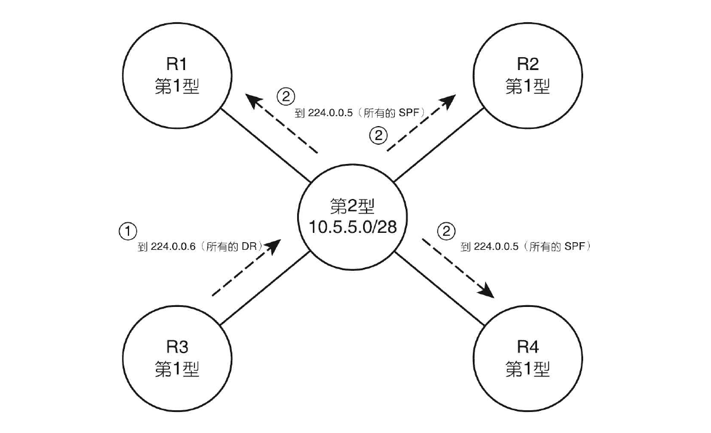
- 4 個第1型 LSA，代表位於相同 LAN 的 4 台真實路由器
- 1 個第2型 LSA，代表多重存取子網路，此時 DR 扮演建立第2型 LSA 的角色
2 步驟:
- 非 DR 路由器以相同的訊息執行資料庫的交換，並傳送這些訊息到 DR 路由器 (第2型虛擬節點) 的 224.0.0.6 群播位址
- DR 路由器 (第2型虛擬節點) 以相同的訊息執行資料庫的交換，但傳送這些訊息到所有 SPF 路由器的 224.0.0.5 群播位址
也就是說，扮演虛擬節點腳色的 DR 會將 LSA 洪泛到子網路中的其他 OSPF 路由器。
在子網路中 DR 存在的情況下，DROther (非DR非BDR) 路由器僅與 DR 和 BDR 執行資料庫的交換。比方說，R1 扮演 DR，R2 扮演 BDR，R3/R4 扮演 DROther，由於邏輯上不允許 R3 與 R4 的資料庫交換，因此路由器不會達到 FULL 狀態，而是維持在 2-Way 狀態。
洪泛到整個區域
當路由器從某個鄰居學到新的 LSA 時，該路由器會認為在相同區域內的其他鄰居也許不知道此 LSA。也就是說當 LSA 改變時 (當介面狀態改變時)，路由器可能學到舊的 LSA，但其序號是新的，故需要再次將此變更的 LSA 洪泛到該區域中的其他鄰居。
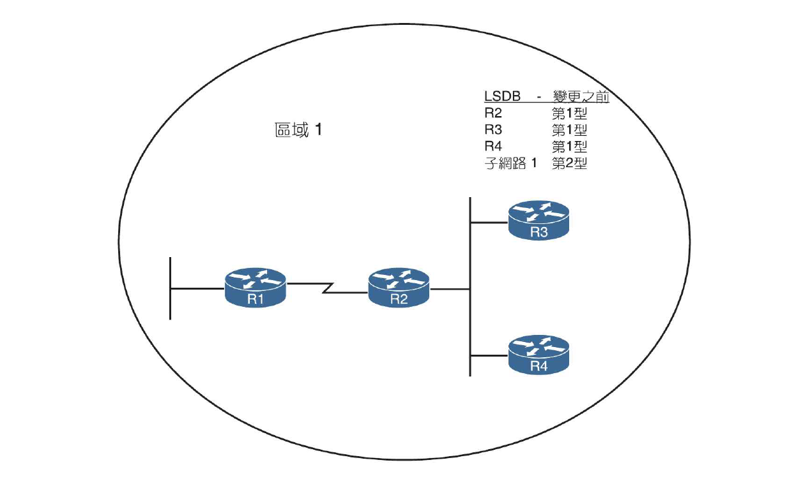
首先考慮 R1、R2，當 R1 開機後，R1 與 R2 達到 Full 狀態，並擁有相同區域1的 LSDB：
- R2 學到所有 R1 新的 LSA (僅 R1 的第1型 LSA)
- R1 學到 R2 所知道的全部區域1的 LSA (包含 R3、R4 的第1型 LSA)
接下來看關於 R3、R4 的 LSDB：
- 當 R2 學到 R1 的第1型 LSA 後，會傳送 DD 封包到 R2、R3、R4 所連結的 LAN 之 DR
- DR 產生 LSR/LSU，使得 R3、R4 可以收到 R1 的新 LSA
- 若有更多路由器存在區域1，洪泛程序會繼續傳遍整個區域，直到所有路由器知道每個 LSA 的最佳副本為止
定期洪泛
OSPF 會根據每個 LSA 的計時器，每 30 分鐘 (1800s) 重新洪泛一次。當路由器建立 LSA 時，會將計時器設為 0，如果 30 分鐘沒有任何變化，那麼擁有 LSA 的路由器會將序號增加、重新設定計時器為 0，並重新洪泛 LSA。
當路由器需要針對區域從 LSDB 刷新 LSA 時，實際上會將 LSA 的計時器定為 MaxAge(3600) 並重新洪泛 LSA。所有其他路由器收到該 LSA 時，看到計時器已經是最大值，會從它們的LSDB 刪除該 LSA
選擇最佳的OSPF路徑
- 分析 LSDB，以便計算出到達子網路的所有可能路徑
- 對於每個可能的路徑，在該路徑的所有出境介面上增加 OSPF 的介面成本
- 挑選總成本最低的路徑
區域內路徑的成本計算
- 根據列在第1型 LSA 裡的末梢介面以及任何一個第2型 Network LSA，找出區域內所有的子網路
- 執行 SPF 以找到通過該區域拓樸的所有可能路徑 (從該拓樸到各子網路)
- 替每筆路徑裡的所有出境介面計算 OSPF 介面成本，並從每個子網路中，挑選總成本最低的路徑來作為最佳路徑
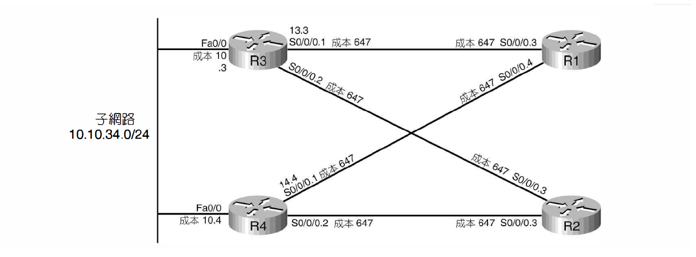
- R1 透過 DR 知道區域中存在 10.10.34.0/24 的子網路
- R1 透過 SPF 決定 4 條可能的路徑
- 算出最佳路徑 R1-R3: 657, R1-R4: 657
當兩者的權值相同時，根據
maximum-paths 4的預設值，R1 會將這兩2條路徑都新增到它的路由表中OSPF 支援成本相等(equal-cost)的負載平衡，但不支援成本不等(unequal-cost)的負載平衡。
maximum-paths最低為 1，最大值則依據路由器平台和CiscoIOS版本而定。
區域間路徑的成本計算
考慮 R3 如何找出到達 10.10.99.0/24 的最佳路徑
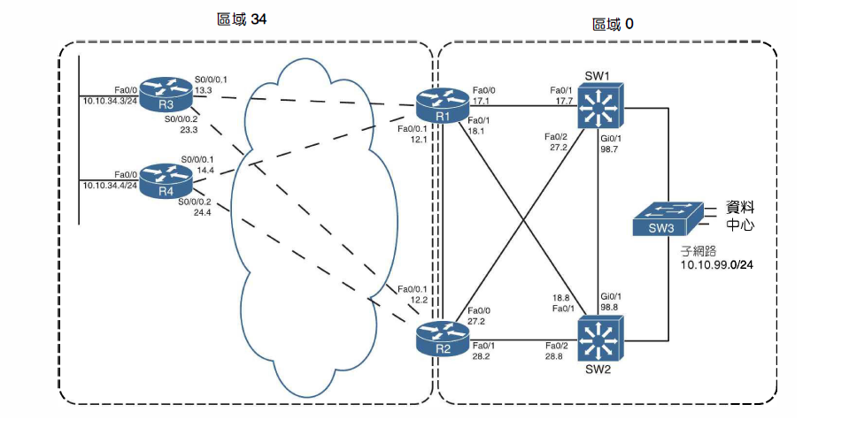
由於區域設計的關係，R1 和 R2 扮演 ABR 的角色。R3 倚賴 ABR 所建立的第3型 LSA (Summary LSA)，其中的資訊如下：
- LSA 顯示的子網路編號/遮罩
- ABR 到達子網路之最佳路徑的成本
- ABR 的 RID
計算最佳路徑的方法：
- 計算從路由器到 ABR (由第3型LSA得知）的區域內成本
- 加上第3型 LSA 所列的成本值 (表示ABR到目的子網路之成本)
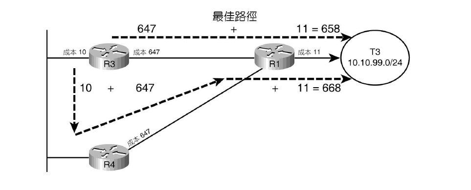
R3 也會對 ABR R2 做相同的事，選擇最佳路徑加到路由表中
ABR區域內與區域間的特例
當超過一個以上的 ABR 同樣連接到 2 個區域時：
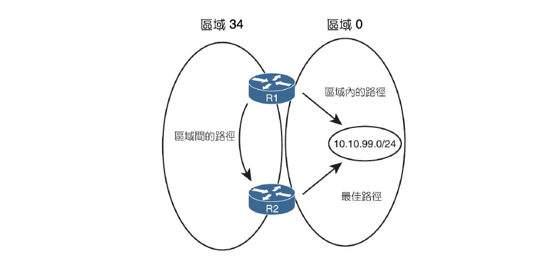
- 在選擇最佳路徑時，無論權值大小，區域內路徑永遠優於區域間路徑
- 如果 ABR 學到非骨幹區域的第3型 LSA，那麼 ABR 在計算自己的路徑時會忽略該 LSA (僅選擇自己的最佳 IP 路徑)
權值與SPF計算
無論第3型 LSA 如何變更，並不影響路由器與 ABR 之間的拓樸。而 SPF 著重於處理拓樸資料，所以只有第1、2型 LSA 的改變才會要求 SPF 的計算。
show ip ospf 可以查看 LSA 執行次數，以及最後一次執行到現在經過的時間。
權值的調整
- 修改參照頻寬
- 設定介面頻寬
- 直接設定OSPF成本
OSPF 根據下列公式來計算介面的預設成本：成本 = 參照頻寬 / 介面頻寬
修改參照頻寬
auto-cost reference-bandwidth [bandwidth] (Mbps)
修改參照頻寬的主要動機，是為了提供高速鏈路理想的預設成本。藉由修改OSPF的參照頻寬，使得高速鏈路之間的成本產生些為差異，則OSPF就能在使用高速介面的路徑之間做出選擇。
設定介面頻寬
bandwidth [speed] (Kbps)
直接設定成本
ip ospf cost [value]
路徑篩選
防止網路某部份的主機傳送封包到另一個地方、減少路由表大小、CPU資源，讓封包的轉送執行的更順暢。
區域內/區域間路徑計算
- 區域內透過第一型、第二型 LSA 拼湊出拓樸，執行 SPF 尋找每個子網路可能路徑
- 區域間的路徑計算透過本身抵達 ABR 的權值，加上 ABR 通告目的地子網路子網路的權值，因此不需要 SPF 計算，就能找出所有子網路的區域間路徑
區域內/區域間路徑篩選
OSPF 不是通告路徑，是通告 LSA，因此路徑篩選做的事就是在過濾特定 LSA
- OSPF 不允許過濾同一區域內的 LSA，特別是描述區域拓樸的第一型與第二型的 LSA
- 因為同一區域內的所有路由器都要有相同的 LSDB 才能進行 SPF 計算，否則可能造成迴圈
- 只能設定 ABR 過濾第三型 LSA 來達到路徑篩選 (或是 ASBR 過濾第五型 LSA)
過濾第三型LSA
告訴 ABR 要過濾某些 LSA 通告
舉例來說，計畫使區域1的所有封包到達不了子網路3，且僅可透過 ABR1 到達子網路2
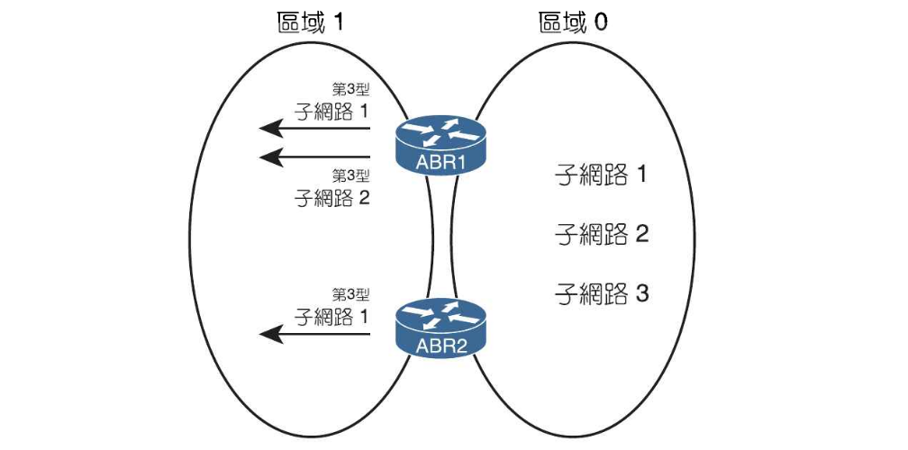
- 在 ABR1 過濾子網路 3 的通告
- 在 ABR2 過濾子網路 2,3 的通告
設定：router ospf 後 area {number} filter-list prefix {name} {in|out}
- in: 過濾的是建立並洪泛到設定區域(number)的prefix-list(name)
- out: 過濾的是從區域(number)離開的prefix-list(name)
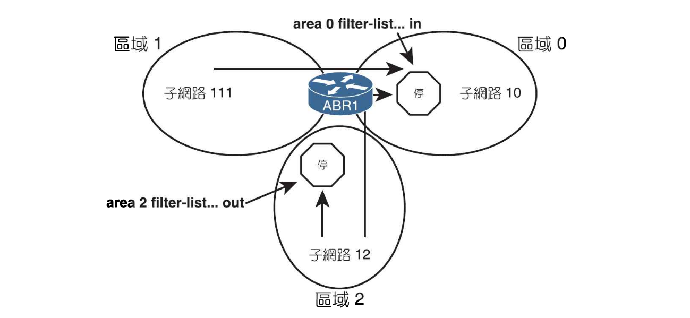
過濾OSPF路徑防止新增到路由表
如果同一個區域中有20台路由器，只想在其中5台路由器中過濾路徑，就無法使用過濾第三型 LSA，因為過濾第三型 LSA 只能防止該 LSA 洪泛到整個區域。
利用 distribute-list prefix {name} {in|out} 讓個別的路由器過濾特定的 OSPF 路徑，防止將某條 SPF 計算完後的路徑加入到路由表中。
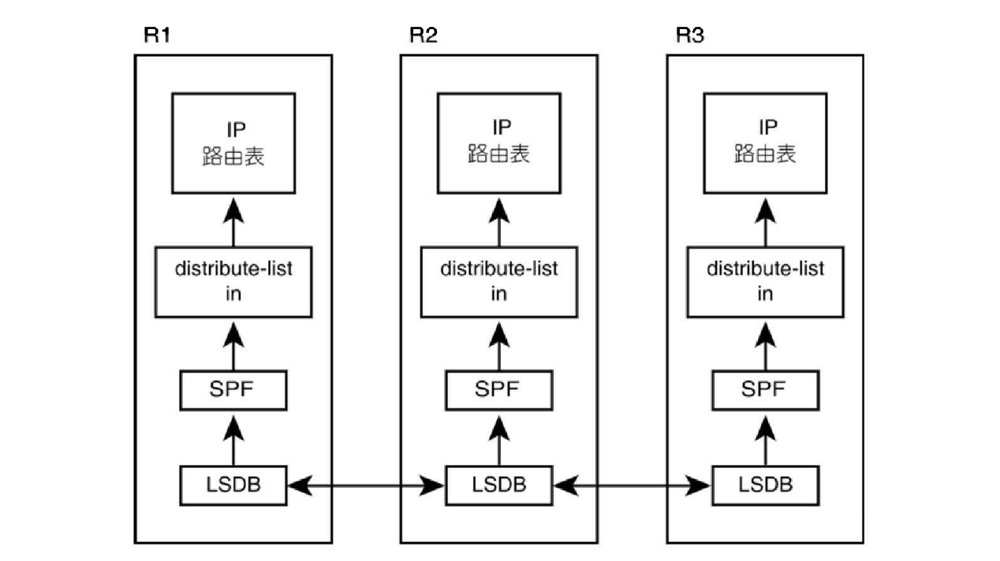
- 只有
in可以達到過濾路徑的效用 - 設定必須參找到 ACL，只有符合 permit 才會被加到路由表
檢查：
show ip route ospf | include {ip}show ip ospf database | include {ip}
路徑彙整
目的：減輕路由協定和封包轉送的負擔
- OSPF 僅支援在 ABR 和 ASBR 做路徑彙整
- 因為區域內的所有路由器都有相同的 LSDB，如果有彙整的需求，應該在區域邊界做彙整，之後洪泛至區域內所有的路由器
- 想在相同區域的某些路由器彙整特定路徑，無法使用 OSPF 達到
ABR的手動彙整
若區域內的子網路編號正好在同一範圍內，且沒有一個子網路是出現在其他 OSPF 區域裡，在連接該區域的 ABR 上便適合建立路徑彙整。
area {area-id} range {ip-address} {mask} [cost {cost}]
area-id為該子網路所在的區域，彙整路徑會被通告到其他所有連結 ABR 的路由器- ABR 會比較彙整路徑與所有來源區域內的 OSPF 路徑，如果至少存在一個位於彙整路徑範圍的子網路(次級子網路)，則 ABR 會通告此彙整路徑的第三型 LSA
- ABR 不會通告次級子網路的 LSA
- 次級子網路如果不存在則不會通告此彙整路徑
- ABR 預設會將所有次級子網路的最佳權值指派給彙整路徑的第三型 LSA 權值(因為封包到 ABR 後會走最佳路徑)
area range的指令也可明確指定權值
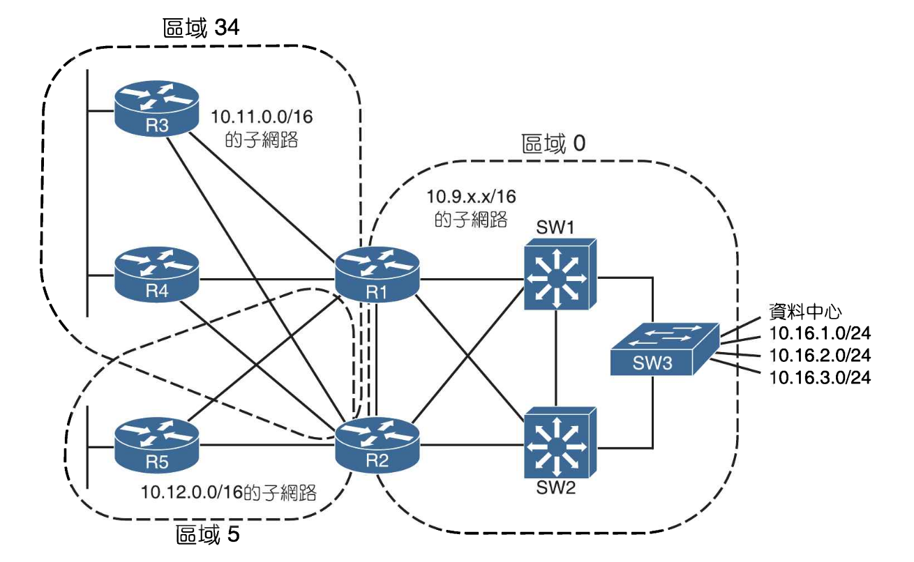
可以設定 ABR R1 與 R2 將 10.16.1.0/24、10.16.2.0/24、10.16.3.0/24 彙整成 10.16.0.0/22。並使用 area 0 range 10.16.0.0 255.255.252.0 來通告此彙整路徑。
ASBR的手動彙整
ASBR 替每個重分配的子網路建立第五型 LSA，並在 LSA 裡將子網路編號列為 LSID，及遮罩列為欄位之一。第五型 LSA 的運作方式與第三型 LSA 運作方式非常類似。
summary-address {prefix mask}
- 建立第五型 LSA 彙整外部路徑，取代次級子網路的第五型 LSA。如果有任何次級子網路存在，則 ASBR 會執行路徑彙整。
- 與 ABR 手動彙整的差異：無法手動設定彙整路徑的權值
預設路徑
使用情境：
- 讓網路邊緣的所有封包傳送到網路核心，因為核心路由器知道更確切的目的地位置
- 為所有目的地為 Internet 的流量，最終都導向連接 Internet 的路由器
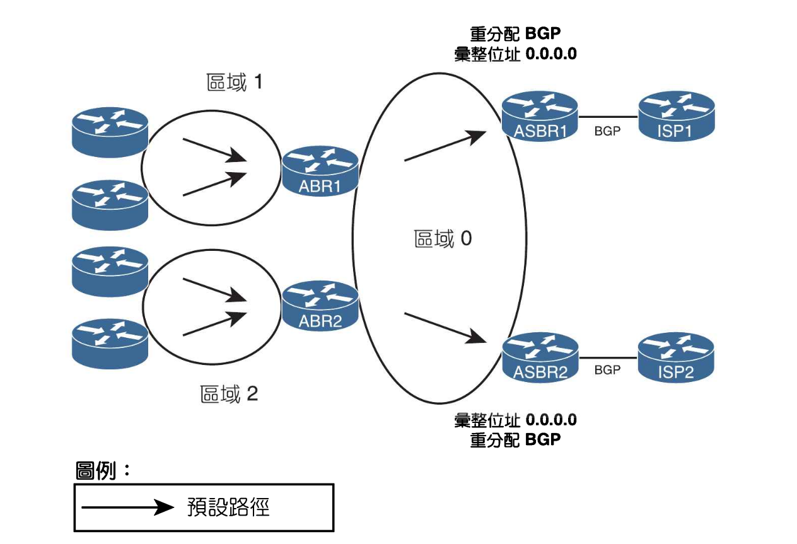
ASBR 彙整右方 BGP 學習到的路徑，並將路徑彙整為 0.0.0.0/0，洪泛第五型 LSA 到整個區域中。
換句話說，當封包目的為 Internet，所有 OSPF 路由器都會選擇預設路徑，將封包傳給 ASBR，再傳送到 Internet 中。
兩種實現方式：
- ABR可以使用
area range將預設路徑洪泛到同一區域中- 以上圖為例，在 ABR1 上下
area 0 range 0.0.0.0 0.0.0.0會通告預設路徑到區域1內，且不會通告任何其他從區域0學習到的第三型 LSA - 對於封包要前往未知的目的地位址，區域1內的路由器都會使用預設路徑往 ABR，ABR 再決定接下來的路徑
- 以上圖為例，在 ABR1 上下
- 除了
area range與summary-address，通常工程師會使用default-information originate將預設路徑洪泛到整個 OSPF 領域
default-information originate
用來告訴 OSPF 去建立預設路徑的第五型 LSA (用於通告外部路徑)，換句話說，這個第五型 LSA 會包含預設路徑 (0.0.0.0/0) 的資訊，並洪泛到整個 OSPF 領域，讓所有的路由器都學到了預設路徑
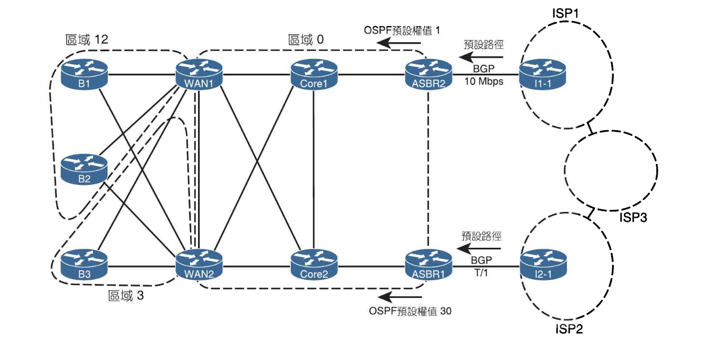
舉例來說，工程師想要使用預設路徑，讓所有路由器傳送封包到 ASBR1 或 ASBR2
前提是 ASBR 的路由表中已經有存在一條預設路徑(靜態路由/從ISP學到的)
- 當所有路由器運作正常，路由器會通過 ASBR2 將流量轉送到 Internet (權值較小)
- 當 ISP1 不再以 BGP 通告預設路徑，或是 ASBR2 與 ISP1 間的 BGP 出現問題，那麼 ASBR2 會移除它的預設路徑，讓 ASBR1 成為 OSPF 領域中的預設路徑 (原先為備援路徑)
default-information originate [always] [metric metric-value] [metric-type type-value] [route-map map-name]
- 使用預設參數，且路由表存在預設路徑，OSPF 會通告 External 第二型的預設路徑(權值為1的第五型LSA)至 OSPF 網路中
always：即使路由表不存在預設路徑，仍會通告預設路徑metric：定義預設路徑的權值(預設1)metric-type：LSA 為 External 第一型或 External 第二型(預設為第二型)route-map：根據符合 route map 參照的允許動作，來決定何時通告預設路徑何時移除預設路徑
末梢型區域
使用預設路徑將末梢區域往未知目的地的封包都轉送到 ABR，因為 LSDB 裡有的 LSA 較少，因此使用預設路徑可以減少記憶體、CPU消耗。
4種類型：
- 末梢 (stub)
- 完全末梢 (totally stub)
- 半末梢 (not-so-stubby areas, NSSA)
- 完全半末梢 (totally NSSA)
細節：
- 4種類型都會過濾第五型LSA
- 對於名稱有「完全」的種類，還會再過濾第三型LSA
- NSSA 可以將外部路徑重分配到區域裡
設定
末梢：區域中的每台路由器都要設定 area {area-id} stub
完全末梢：ABR需要設定 area {area-id} stub no-summary，區域中的其他路由器必須設定 area {area-id} stub
配置權值：area {area-id} default-cost {metric}，預設為1
檢驗
show ip ospf：確認區域為末梢區域
show ip ospf database summary 0.0.0.0：列出所有具有 0.0.0.0 的第三型 LSA
show ip ospf database database-summary：列出 LSDB 中 LSA 的類型與數量統計，檢查第五型與第三型 LSA 的數量。
例子
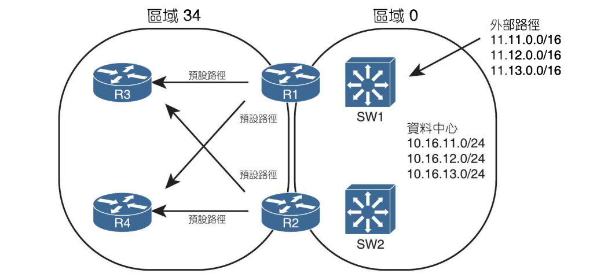
- ABR 會過濾掉外部路徑(11.11, 11.12, 11.13)，因此這三條路徑不會出現在區域34的LSDB中
- ABR 會通告區域間路徑(10.16.11, 10.16.12, 10.16.13)

- ABR 會過濾掉外部路徑(11.11, 11.12, 11.13)，因此這三條路徑不會出現在區域5的LSDB中
- ABR 會過濾掉區域間路徑(10.16.11, 10.16.12, 10.16.13)，因此這三條路徑也不會出現在區域5的LSDB中
半末梢區域
根據定義可以知道：
- 末梢型區域永遠學不會第五型 LSA
- 外部路徑加入到 OSPF 會被視為第五型 LSA
由此可知 ASBR 無法以正常方式將外部路徑通告到末梢型區域
由於末梢區域不支援第五型 LSA，於是定義了第七型 LSA，第七型 LSA 用途與第五型 LSA 相同，但僅限在 NSSA 中傳送外部路徑。
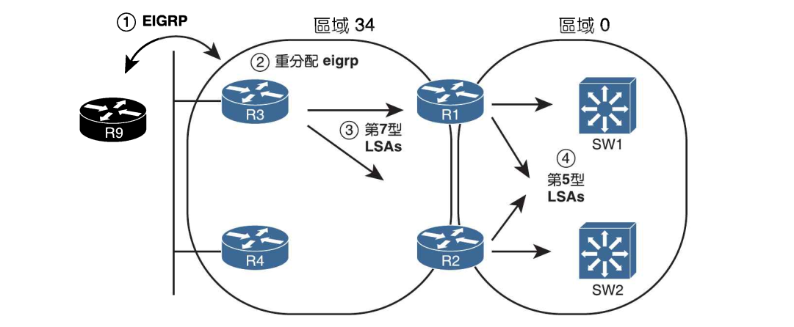
- ASBR R3 學到 R9 的外部路徑
redistribue指定路徑重分配，因此從 R9 學到的 EIGRP 路徑會被重分配到 OSPF 中- R3 將第七型 LSA 洪泛到整個 NSSA(區域34)
- ABR R1, R2 根據第七型 LSA 建立第五型 LSA，並洪泛第五型 LSA 到其他區域中
設定
NSSA：area {area-id} nssa，ABR 需設定為 area {area-id} nssa default-information-originate
完全 NSSA：area {area-id} nssa no-summary
OSPFv3
支援 IPv6
v2 vs v3
改名的LSA：
- 第三型LSA > ABR的區域間首碼LSA (Interarea prefix LSA for ABR)
- 第四型LSA > ASBR的區域間首碼LSA (Interarea prefix LSA for ASBR)
新的LSA：
- 第八型LSA (Link LSA)，僅存在本地鏈路上，利用它來通告路由器的鏈路區域位址給相同鏈路上的所有其他路由器
- 第九型LSA (Intra-Area Prefix LSA)，能夠傳遞有關連接路由器的 IPv6 網路資訊 (類似第一型LSA)，此外也能傳送區域內 IPv6 傳輸網路區段的資訊 (類似第二型LSA)
OSPFv3 傳統設定
- 啟用 IPv6 單點傳播路由：
ipv6 unicast-routing，或是針對 IPv6 使用ipv6 cef啟用 CEF，可以提供更有效的路由查詢 ipv6 router ospf {process-id}- (Optional)
router-id {rid}設定路由器ID，不設會動態指定一個 IPv4 當作路由器ID ipv6 ospf {process-id} area {area_number}指定一個以上的介面參與 OSPF
檢驗：將檢驗 OSPFv2 的指定中的 ip 換成 ipv6
OSPFv3 位址家族設定
位址家族 (Address family) 可以在 OSPF 程序下同時支援 IPv4 與 IPv6。有了這個設定，一個 LSDB 即可同時維護 IPv4 與 IPv6 的網路資訊。
router ospfv3 {process-id}- (optional)
router-id {rid} address-family {ipv4|ipv6}- 進入希望參與OSPF的介面，
ospfv3 {process-id} {ipv4|ipv6} area {area_number}